Part 2
The control module performs TCS modulation with braking when the following criteria are met- The driver does not depress the brake pedal, the brake light switch input is not active.
- Road speed is below 40 km/h.
- One of the driven wheels is spinning more than the permissible limit.
When TCS modulation with braking occurs, the vacuum servo, primary piston and secondary piston are in their rest positions. In the valve block the inlet and outlet valves are in their rest positions, that is to say the inlet valves are open and the outlet valves are closed.
The control module starts the pump while the pressure relief valve is closed in order to allow pressure build-up to occur. Pressure is built up by opening the pressure increase valve in order to supply the return pump with brake fluid. The control module closes the pressure increase valve when the pre-determined pressure has been reached. The pressure is then modulated as the control module opens the pressure increase valve to increase pressure, keeps both the pressure increase and pressure relief valves closed to retain pressure and opens the pressure relief valve to reduce pressure. The excess brake fluid resulting from opening the pressure relief valve is returned to the master cylinder.
When TCS modulation starts, a "filling pulse" is generated, which means that a small amount of pressure (same for both wheels) is built up in the wheel cylinders for both driven wheels irrespective of the wheel for which modulation with braking will occur.
Pressure will be maintained on the front wheel for which braking will not occur, i.e. both the pressure increase and pressure relief valves will be closed. This is in order to prepare for an application of the brakes if necessary.
The pressure increase valve on the wheel which is spinning will open. This causes an increase in the pressure to the wheel cylinder and the wheel is braked.
Modulation continues until:
- The friction between wheels and road surface changes so that wheelspin does not exceed the limit.
- The driver brakes (brake lights switch input active).
- Modulation is interrupted due to the risk for overheating the brakes.
When modulation is interrupted, the control module stops the pump, closes the pressure increase valve and opens the pressure relief valve, i.e. the valves and the return pump resume their rest positions.
If TCS modulation is interrupted by the driver braking, TCS modulation with braking will be disengaged and the braking function will be chosen instead. Any delay that may then arise will not affect the braking function since the brake fluid can flow through the check valve which is mounted parallel with the pressure relief valve.
Interruption of TCS modulation with braking due to a risk for overheating the brakes occurs as a result of continuous recording of the aggregate duration of TCS modulation with braking over a certain period of time by the control module.
The time is compared with a pre-programmed maximum value and modulation with braking is disengaged when this is exceeded.
Braking phases
Phase 1 Pressure build-up on both front wheels (filling pulse and holding pressure) The driver does not brake.
Filling pulse
When TCS modulation starts, a "filling pulse" is generated, which means that a small amount of pressure (same for both wheels) is built up in the wheel cylinders for both driven wheels irrespective of the wheel for which modulation with braking will occur. The pump starts, the pressure relief valve closes and the pressure increase valve opens (pre-determined amount of time).
The inlet and outlet valves in the valve block are in their rest positions, i.e. the inlet valves are open and the outlet valves are closed.

Holding pressure
When the filling pulse is concluded, the respective inlet valves close in order to prepare for individual modulation for each wheel.
For wheels which will not be braked with TCS modulation: Pressure holding will occur by closing the pressure increase and pressure relief valves at each circuit and closing the inlet and outlet valves at each wheel. This is to prepare for possible application of the brakes.

Phase 2 Pressure increase in the circuit with wheelspin
The pressure increase valve opens in order to supply the pump with brake fluid, which is pumped into the circuit, and the pressure relief valve is closed. The inlet valve for the wheel to be braked is opened until the conditions for pressure build-up have been met.
This means that the pressure out to the wheel cylinder is also increased and the wheel is braked. The pump is running.
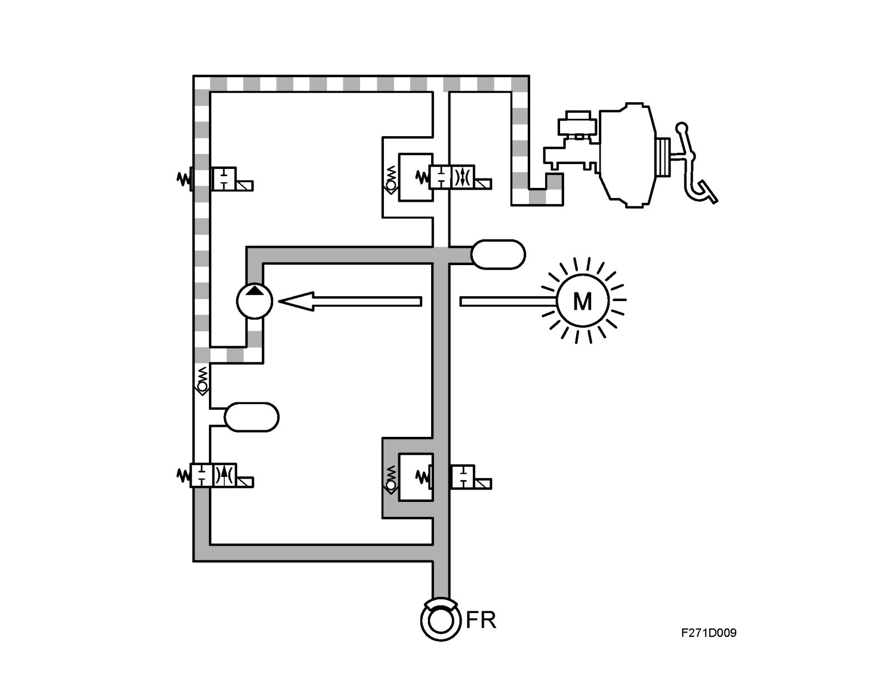
Phase 3 Pressure reduction in the circuit with wheelspin
The pressure increase valve is closed and the pressure relief valve is opened in order to relieve pressure in the circuit.
The inlet valve is closed and the outlet valve is opened in order that the pressure out at the wheel is reduced.
Brake fluid is returned from the wheel outlet valve through the pressure relief valve out to the master cylinder. The pump is running.

Phase 4 Release
The criteria for TCS modulation have ceased. All valves resume their rest positions, i.e. the pressure relief valves are open, the pressure increase valves are closed, the inlet valves are open and the outlet valves are closed. The pump stops.

ESP function
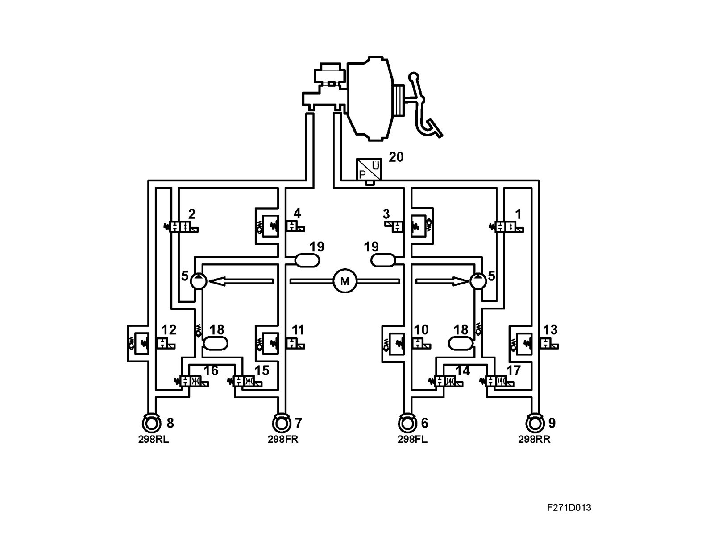
1 Pressure Increase Valve Front Left
2 Pressure Increase Valve Front Right
3 Pressure Relief Valve Left Front
4 Pressure Relief Valve Front Right
5 Pump
6 Wheel sensor, front left
7 Wheel sensor, front right
8 Wheel sensor, rear left
9 Wheel sensor, rear right
10 Inlet valve, front left (ABS)
11 Inlet valve, front right (ABS)
12 Inlet valve, rear left (ABS)
13 Inlet valve, rear right (ABS)
14 Outlet valve, front left (ABS)
15 Outlet valve, front right (ABS)
16 Outlet valve, rear left (ABS)
17 Outlet valve, rear right (ABS)
18 Accumulator chamber
19 Pressure chamber
20 Pressure sensors
On cars equipped with ESP
The Electronic Stability Program (ESP) helps to keep the vehicle on the right course when cornering, taking evasive action, braking and acceleration. The stabilizing effect of the ESP system is based on calculations made by the control module which evaluates information received from the various system sensors.
- Wheel speed sensors
- Steering wheel angle sensor
- Yaw rate sensor
- Lateral acceleration sensor
- Brake pressure sensor
Data from these sensors informs the control module of the driver's intentions, e.g. in which direction the driver intends to travel, if the driver is braking, etc.
The ESP control module, which is integrated in the hydraulic unit, continuously calculates the direction of the vehicle (actual value) and compares that value with the direction indicated by the steering wheel (desired value).
^ If the car starts to understeer (when the front tends to continue straight ahead in a bend), the yaw rate sensor measures a lower value than that calculated. The system applies the brakes on the inside rear wheel, followed by the outside rear wheel and the inside front wheel in the curve until the measured and calculated yaw rates (desired value) correspond.
^ If the car starts to oversteer (the rear tends to drift out), the measured yaw rate (actual value) will be greater than that calculated. The system will apply the brakes on the outside wheels until the measured and the calculated yaw rates (desired value) correspond.
When the system is activated, it can counteract a skid by braking one or two of the wheels without brake pedal application by the driver. The system reduces engine torque with an engine torque request to the engine control module and applies the brakes on all four wheels individually.
The ESP system comprises the ABS, TCS and ESP functions. The ABS and TCS functions retain the same functions as earlier, see the corresponding description of operation.
Engine torque regulation
Engine torque regulation takes place after bus communication with the engine control module during which the ESP control module requests a specific engine torque from the engine management system. Engine torque is then regulated with ignition retardation and throttle control, i.e. changing the throttle angle and boost pressure (air mass/combustion). By using engine torque regulation, the brakes need not be applied as often, resulting in a higher degree of comfort.
This action means that kinetic energy in the drive wheels is converted to heat in both cases. Applying the brakes heats the wheel brakes and ignition retardation raises the exhaust temperature. In order to protect the turbocharger and catalytic converter, ignition retardation does not occur at high exhaust temperatures.
BTC (Brake Torque Compensation) (ESP B284)
This function provides a smoother and more comfortable engagement of ESP by adding more engine torque. This will reduce the driver's perception that ESP regulation is in progress. The ESP control module performs a summation of the braking forces on all wheels and requests a calculated torque to compensate for the retardation. This request is sent via the bus to the engine control unit that compensates with more air.
^ Calculation of braking force on all wheels
^ Speed
^ Torque request, max 25 Nm
Braking
The brakes are applied through ESP control of the pump motor, pressure increase and pressure relief valves, as well as the inlet and outlet valves in the hydraulic unit. This allows the braking force for each wheel to be controlled individually. The ESP control module receives information from the brake pressure sensor and uses this information to control brake pressure on each wheel in relation to the braking force applied by the driver. A wheel regulated by ESP in controlled using the ESP criteria.
Both front and rear wheels are connected to the pressure increase and pressure relief valves in the hydraulic unit, which allows each wheel to be controlled independently.
Friction is estimated by calculating drive wheel torque during acceleration (which is a function of the engine torque) or braking (which is a function of braking force).
If performing evasive action during emergency braking, the vehicle can be manoeuvred by regulating the braking pressure applied by the driver using the control module and pump. The applied braking force on each wheel can therefore be above or below force requested by the driver.
Braking distance is given priority when braking in a straight line while stability is given priority during evasive action. ESP modulation can occur with or without the driver applying the brake pedal.
Braking
During ESP modulation, the control module starts the pump which remains running during the entire modulation cycle. At the same time, the pressure relief valve is closed in order to allow pressure build-up. Pressure is built up through the opening of the pressure increase valve, which supplies the pump with brake fluid.
The control module closes the pressure increase valve when a pre-set pressure is reached. The control module regulated pressure by opening of the pressure increase valve, closing the pressure increase and pressure relief valves to maintain pressure and opening the pressure relief valve in order to lower the pressure. The inlet and outlet valves are activated for individual wheel control.
The valves are activated with a pulse train, during which the time corresponds to a pressure increase or pressure decrease. Excess brake fluid remaining when the pressure relief valve opens is returned to the master cylinder.
The ESP function controls one to three wheels simultaneously.
Braking phases
Phase 1 Pressure build-up for all four wheels (filling pulse and maintaining pressure). Driver does not brake.
Filling pulse
When TCS modulation starts, a "filling pulse" is generated, which means that a small amount of pressure (same for both wheels) is built up in the wheel cylinders for both driven wheels irrespective of the wheel for which modulation with braking will occur. The pump starts, the pressure relief valve closes and the pressure increase valve opens (pre-determined amount of time).
The inlet and outlet valves in the valve block are in their rest positions, i.e. the inlet valves are open and the outlet valves are closed.

Holding pressure
When the filling pulse is concluded, the respective inlet valves close in order to prepare for individual modulation for each wheel.
Wheels on which the ESP system does not apply brakes: Pressure will be maintained with the pressure increase and pressure relief valve closing on each circuit as well as closing of the inlet and outlet valves by each wheel. This occurs in order to prepare the system in the event that braking is necessary.
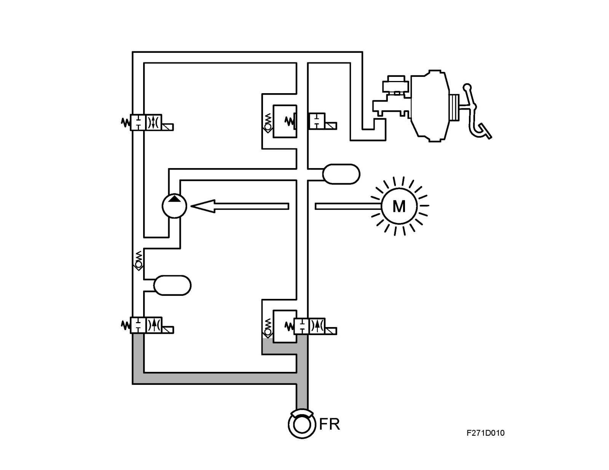
Phase 2 Pressure increase on wheels under ESP regulation
The pressure increase valve opens in order to supply the pump with brake fluid which is pumped into the circuit. The pressure relief valve is closed.
The inlet valve for the wheel having its brakes applied will be opened until the conditions for pressure build-up have been met.
This means that the pressure out to the wheel cylinder is also increased and the wheel is braked. The pump is running.

Phase 3 Pressure reduction on wheels under ESP regulation
The pressure increase valve is closed and the pressure relief valve is opened in order to relieve pressure in the circuit.
The inlet valve is closed and the outlet valve is opened in order that the pressure out at the wheel is reduced.
Brake fluid is returned from the wheel outlet valve through the pressure relief valve out to the master cylinder. The pump is running.
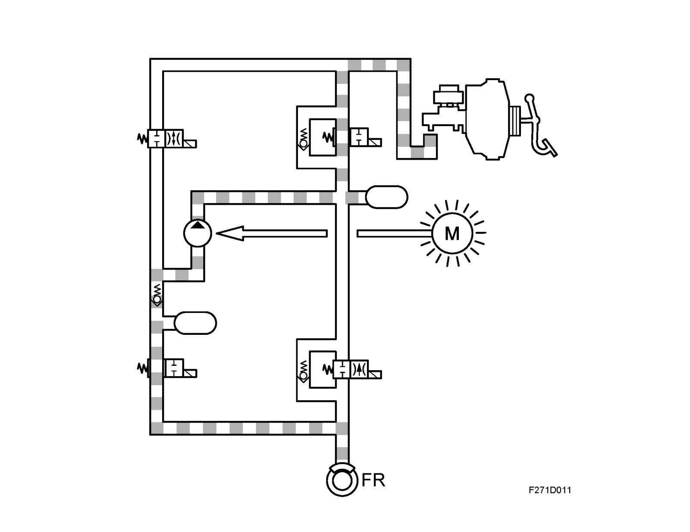
Driver braking
See Phases 1-3
When the driver applies the brakes while ESP regulation is active, the brake pressure sensor informs the control module regarding input brake pressure in the hydraulic unit. With this information, brake pressure to the wheels not under ESP regulation can be controlled in correlation to the driver's braking force.
The wheel under ESP regulation when the brakes are applied is controlled according to ESP criteria.
Phase 4 Release
The criteria for ESP modulation have ceased. All valves resume their rest positions, i.e. the pressure relief valves are open, the pressure increase valves are closed, the inlet valves are open and the outlet valves are closed. The pump stops.
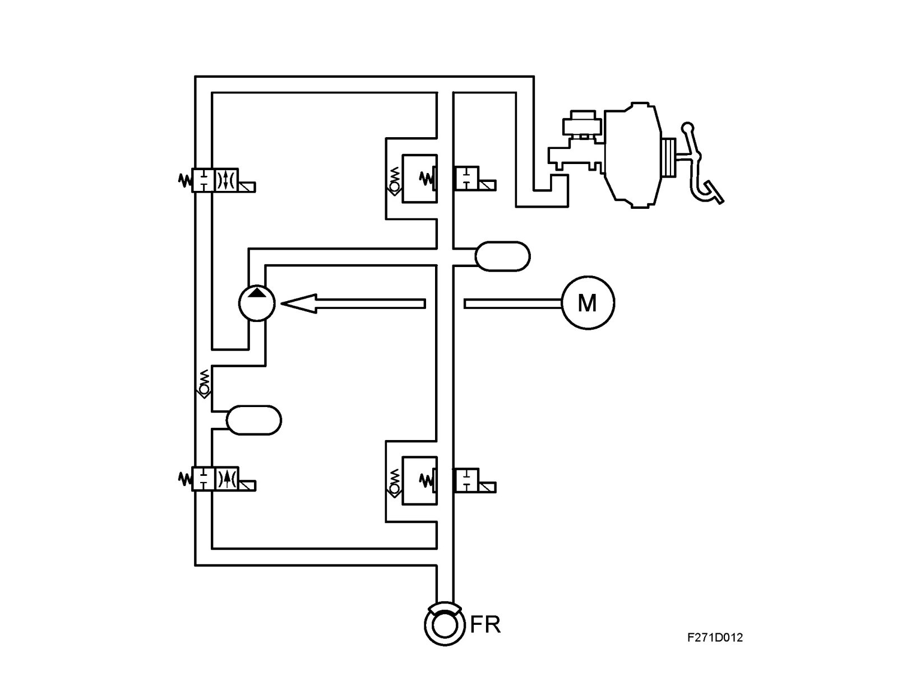
Modulation continues until:
- vehicle movement is below the limit value for ESP regulation.
After regulation is terminated, the control module will stop the pump, close the pressure increase valve and open the pressure relief valve. The valves and the pump resume their resting positions.
Termination of regulation with brake application due to a risk for brake overheating is achieved by the control module, which continuously registers the total time that regulation with brake application has been active during a specific period of time.
The value is then compared to a programmed maximum value. If this value is exceeded, regulation with brake application is terminated.
Self-check
After start, once the vehicle has reached a speed of 6 km/h, the ESP system performs a self-check of the valves and pump. This check may be audible.
Wheel speed
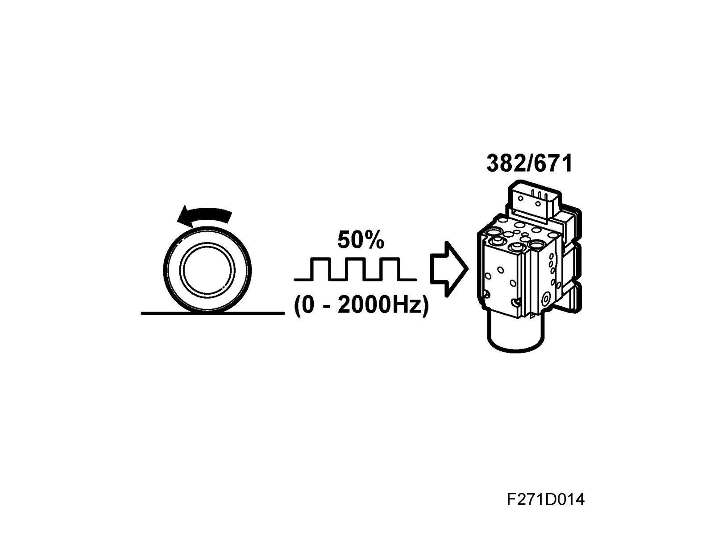
From the wheel sensors (front / rear), the control module receives information on the wheel speed.
The control module uses this information on wheel speed to calculate the speed of the wheels in relation to each other.
If the difference in wheel speed exceeds the limit values, the control module acts accordingly by compensating with braking or an engine torque request.
Steering wheel angle
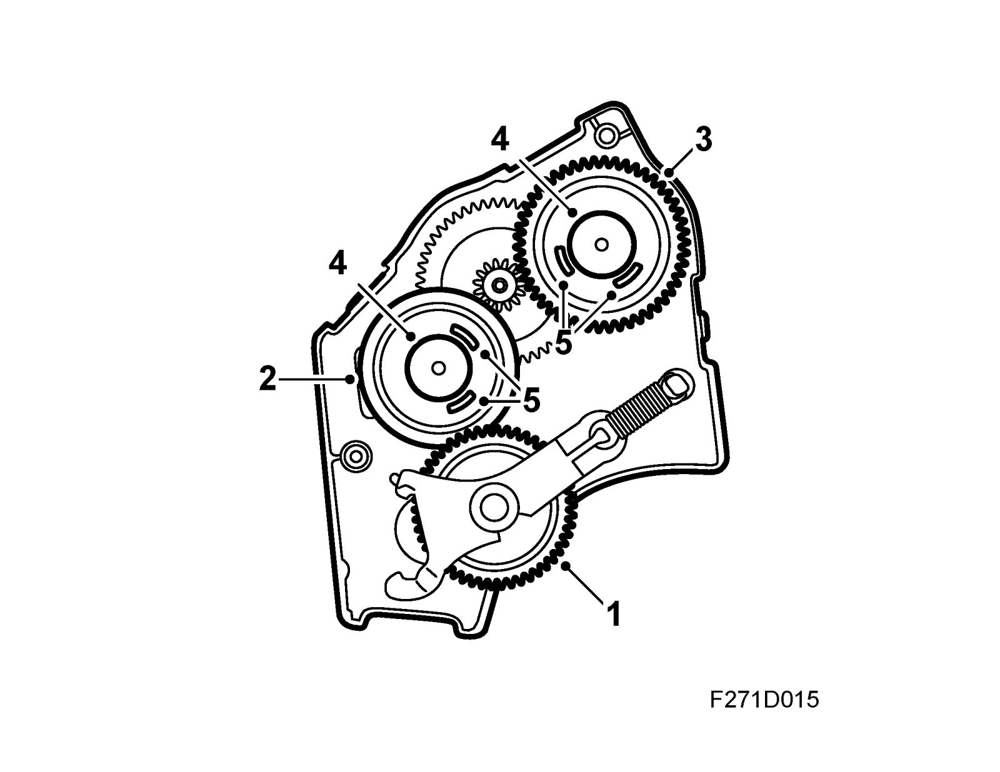
On cars equipped with ESP
The steering wheel angle sensor is fully integrated in the CIM (Column Integration Module) that in turn is fitted in the steering column. The sensor sends information regarding the angle of the steering wheel, ±540°, or 2.9 steering wheel revolutions. 0° = straight ahead. When the steering wheel is rotated anticlockwise, it provides a positive (+) value.
The CIM sends this information on the P-bus and provides steering wheel angle sensor diagnostics.
The ESP control module uses information on the driver's intentions, i.e. the direction in which the steering wheel is rotated, and calculates steering wheel rotation speed.
This information is sent to the ESP control module, which in turn calculates any regulation based on this desired value. The steering wheel angle sensor is connected with 4 pins in one circuit board in the CIM unit; pin for power supply (5V), grounding and communication with the main CIM unit processor.
The sensor comprises a main gear (1) which lies against the steering column and mechanically registers steering wheel movement. This main gear drives three additional gears.
Two of the gears are so-called measuring gears with different numbers of teeth which rotate at different speeds. As a result, their positions change at different times. One gear (2) has 45 teeth (nearest the main gear) and the other (3) has 49 teeth while both have an individual permanent magnet. Two Hall sensors are located by each magnet which register movement in the direction of the magnetic field. The sensors alter their resistance using the direction of the magnetic field registered by the sensors when the gears rotate.
The different rotation speeds of both measuring gears (2 and 3) are registered by electronics which calculate the steering wheel rotation position. The steering wheel angle sensor is calibrated for a 0 position. Using this measuring principle with two measuring gears which show absolute angle, the steering wheel angle sensor microprocessor can calculate the exact steering wheel angle.
When replacing the steering wheel angle sensor, it should be calibrated for a 0 position. This means that the wheels should be placed in a straight-ahead position since the steering wheel angle sensor is not equipped with a defined 0 position.
The CIM sends information regarding steering wheel position, when the steering wheel angle sensor has been calibrated and sensor status on the P-bus. The CIM diagnoses the Steering wheel angle sensor.
Yaw rate
On cars equipped with ESP
The yaw rate sensor measures rotation movement around the vehicle's centre of gravity. The purpose of the yaw rate sensor is to measure if the vehicle is rotating around its own vertical axis and register every instance of this movement, i.e. if the vehicle turns. The sensor sends this so-called actual value on the bus to the ESP unit control module which compares the value with the desired value from the steering wheel angle sensor.
Yaw refers to vehicle movement around its own axis, which is measured in degrees/sec. Yaw rate acceleration can also be calculated by measuring lateral acceleration, speed and steering wheel angle. If these three values correspond to the measured value from the yaw rate sensor (YRS), the system presumes that the vehicle is stable. The main components in the yaw rate sensor include a silicone ring gyro which uses frequencies to detect rotation movements.
See Technical description, Yaw rate sensor (658) and Technical data Yaw rate sensor (658).
Lateral acceleration
On cars equipped with ESP
The lateral acceleration sensor registers lateral forces which arise during cornering. The sensor provides the control module with information regarding the intensity of the lateral forces which attempt to move the vehicle from its intended course. The sensor sends this so-called actual vale to the ESP unit control module, where the value is compared with the desired value from the steering wheel angle sensor.
A new gyro with an additional sensor element for measuring acceleration in a longitudinal direction has been introduced on cars with B284 engine and manual gearbox. This signal is used to detect whether the car is standing on an incline and is part of the HSA (Hill Start Assistant) function.
Measurement of lateral and longitudinal acceleration is done according to the capacitive principle.
A capacitor plate with a moving mass is suspended so that it can move freely. Two other fixed capacitor plates surround the moving capacitor, providing a structure using two series-coupled capacitors. With help from electrodes, the amount of capacitor charge storage capability can be measured. When the sensor is actuated by lateral acceleration, the condenser with the mass move towards the fixed capacitors, increasing the charge in the capacitor towards which the moving mass nears (measured in ampere).
See Technical description, Yaw rate sensor (658) and Technical data Yaw rate sensor (658).
Brake pressure
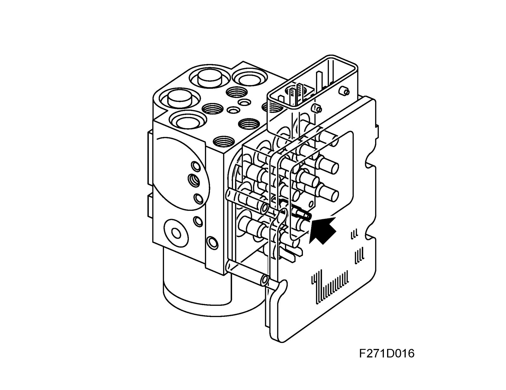
On cars equipped with ESP
The brake pressure sensor is integrated in the ESP unit which measures input brake pressure from the master cylinder in the primary circuit (FL and RR) up to 350 bar.
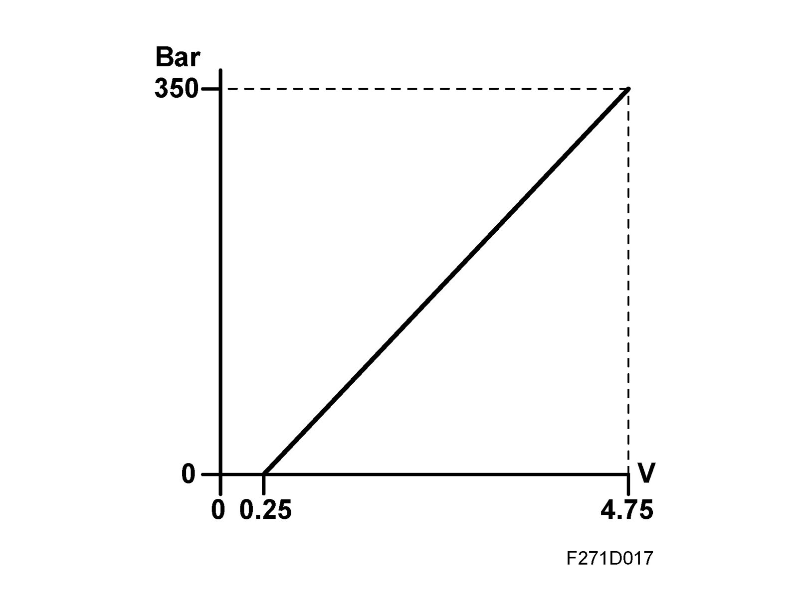
The ESP control module uses information regarding current brake pressure in order to calculate correct braking force on the wheels.
The pressure sensor consists of a silicone-based element that uses a piezoelectric operating principle involving the registering of an analogue output signal. When brake fluid pressure increases, the charge distribution in the element changes and the voltage becomes higher 0.25V-4.75V.
The signal voltage is amplified in the sensor and registered by the control module. The voltage corresponds to the pressure in the brake system.
Warnings and indicator lights
In certain situations, the TCS/ESP control module sends information regarding abnormal system function. This is displayed in the SID according to the following.
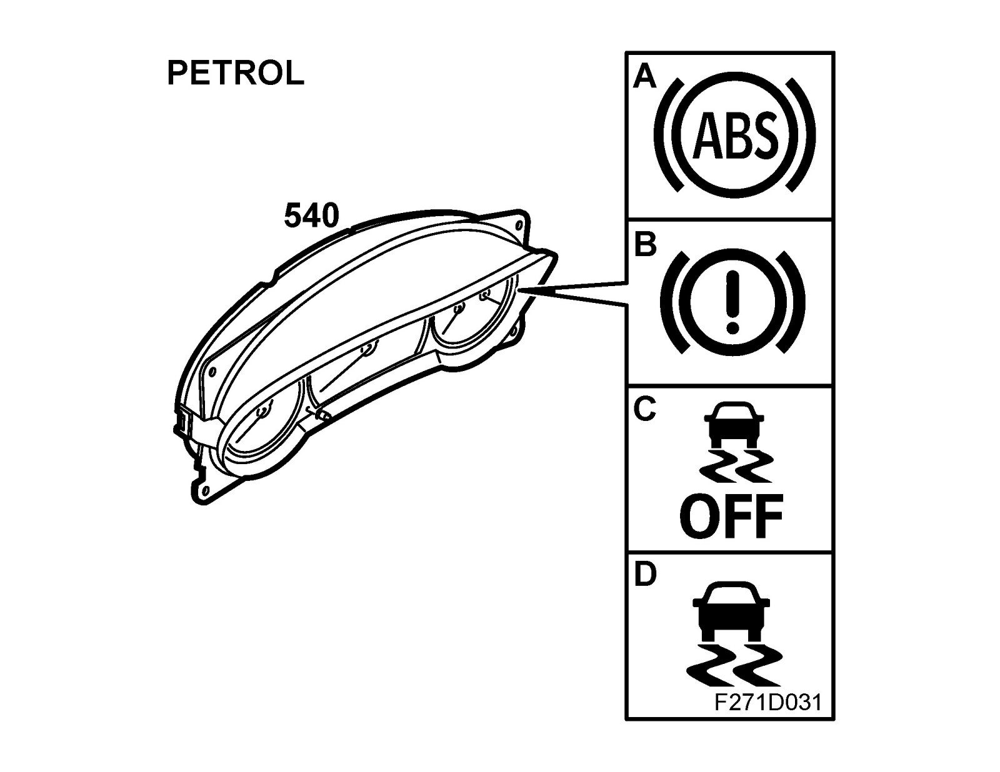
MIU petrol engine
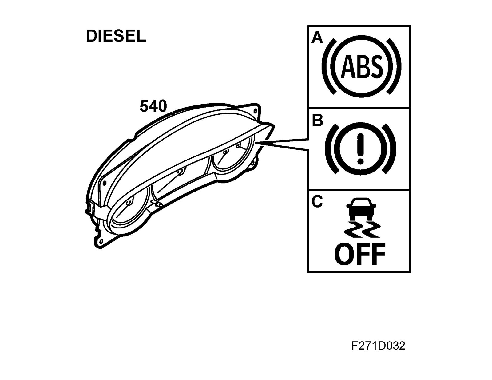
MIU diesel engine
A.
ABS - Warning, anti-lock brakes
The symbol lights when a fault is detected in the ABS system.
B. Foot brake, warning
Symbol and warning text light if EBD fault is detected or if the brake fluid level is too low
C. TCS OFF or ESP OFF
This symbol lights when the system is disengaged, with the TCS/ESP button or if a system fault is detected.
D. TCS or ECP indicator light
- The symbol flashes when the system is operative (cars with petrol engine)
- The symbol is illuminated constantly when the system is operative (cars with diesel engine)
E. Foot brake, warning
Symbol and warning text light if EBD fault is detected or if the brake fluid level is too low
F. ABS not functioning Contact workshop
The brake system functions without ABS function. Check the brake fluid level in the reservoir.
G. Anti-spin/Anti-skid not functioning
Contact a workshop. The symbol and text are displayed when system fault is detected.